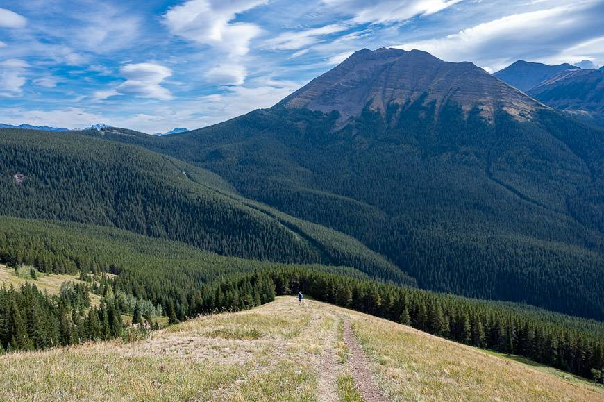

My Pepeha
Kia Ora Tatou!
Ko Pigeon Mountain Te Maunga
Ko Howick Beach Te Awa
No Auckland Ahau
Ko Naran Toku Whanau
Ko Jaison Toku Ingoa
Kia Ora Tatou, My name is Jaison, and I am from Auckland and my ancestral mountain is Pigeon Mountain, but the water which flows through my ancestral land is Howick Beach, My name is Naran while my family lineage is Patel.